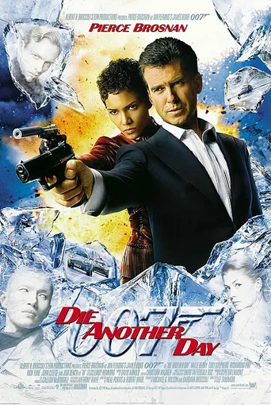

The genetics
The genetic element is a fictional gene therapy for disguise. The Clínica Álvarez in Cuba, run by Dr. Alvarez, offers wanted people a permanent new identity through DNA restructuring, which changes their physical features. The North Korean Colonel Moon has used it to become the British billionaire Gustav Graves, which is the central twist of the plot, and his henchman Zao, whose face was studded with diamonds by Bond's bomb, is found in the middle of his own treatment. The clinic is a service for criminals and terrorists, and its director is killed when the heroes raid it; the technology appears only as a tool of villainy. Critics counted the gene therapy among the film's outlandish quasi-science-fiction elements, alongside an invisible car and a solar weapon. Real gene therapy cannot rebuild an adult's face or change his ethnicity, so the idea is pure fantasy.
How genetics is portrayed
- Overall portrayal of genetics
- negative The only genetic technology in the film is a disguise service for villains, run by a criminal clinic that the heroes destroy.
- Outcome of the genetic intervention
- negative The DNA restructuring lets a war criminal assume a false identity and pursue a plan for war, and it shelters a terrorist.
- Dr. Alvarez (Clínica Álvarez)
- villain Aim: commercial (negative). His Cuban clinic sells DNA restructuring to give fugitives and terrorists new identities; the film treats it as a criminal hideout, and Jinx kills him during the raid.
- Colonel Moon / Gustav Graves
- villain Aim: power, military (negative). The North Korean colonel uses the gene therapy to become a British billionaire and hide while he builds a weapon for an invasion of South Korea; Bond kills him.
The story
In the twentieth James Bond film, Bond infiltrates a North Korean base to stop Colonel Tan-Sun Moon from trading weapons for African conflict diamonds. Moon appears to die, and Bond is captured and tortured for fourteen months before being exchanged for the terrorist Zao. Suspended by M, Bond escapes and follows Zao to a clinic in Cuba that uses DNA restructuring to give clients new appearances; with the NSA agent Jinx he finds Zao in mid-treatment, and diamonds that lead to the British billionaire Gustav Graves. In Iceland, Graves unveils Icarus, an orbital mirror that focuses sunlight into a weapon, and Bond discovers that Graves is Colonel Moon, transformed at the Cuban clinic, and that MI6 agent Miranda Frost is the traitor who betrayed him. Graves plans to use Icarus to clear a path through the Korean Demilitarized Zone for an invasion of the South. Bond and Jinx stop him aboard his plane, where Graves and Frost are killed.